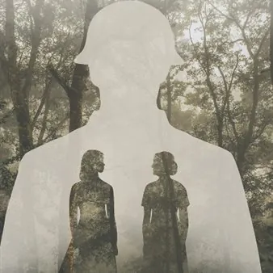

da gio 10 dic a sab 12 dic · dalle 20:00
Il dêt
10-12 dicembre 20:00 organizzato dal Teatri Stabil Furlan Di Doruntina Basha Traduzion par furlan di Elisa Copetti Cun Sonia Cossettini e Elena Genio Regjie Sonia Cossettini Produzion La Compagnia dei Riservati In colaborazion cun Teatri Stabil Furlan Curte, la brût, e Parone…
 Indicazioni
Indicazioni
- Costi e prenotazioni
- Costo non indicato · Prenotazione non indicata
- Programma
- Programma da verificare. Apri la fonte ufficiale per orari e possibili aggiornamenti.
- In caso di maltempo
- Nessuna indicazione specifica pubblicata.
- Note
- Acquisito automaticamente dalla fonte.
L’EVENTO
Descrizione completa
Di Doruntina Basha Traduzion par furlan di Elisa Copetti Cun Sonia Cossettini e Elena Genio Regjie Sonia Cossettini Produzion La Compagnia dei Riservati In colaborazion cun Teatri Stabil Furlan Curte, la brût, e Parone, la madone a son lis protagonistis. Lis dôs feminis a vivin adun, di bessolis, in spiete che l’om di une, e fi di chê altre, al torni cjase. Dutis dôs a son convinçudis di jessi lis unichis che lu cognossin pardabon. Curte e je malcuiete, a stentis e sopuarte la madone e i siei maltrataments; Parone e puarte la cjame di cheste brût malvolude di stâi daûr fin che il fi nol torne. Il zovin però nol tornarà: al è sparît dîs agns prime, intune sere come chê lì e la cene che a son daûr a prontâ e je par un desaparecido. Il lôr al è un rît che al torne a colâ ogni an e che cun dute probabilitât al è l’unic rimpin par restâ tacadis ae vite. Curte , la nuora, e Parone , la suocera sono le protagoniste. Le due donne convivono, sole, in attesa che il marito dell’una, e figlio dell’altra, ritorni a casa. Sono entrambe convinte di essere le uniche a conoscerlo veramente. Curte è irrequieta, mal sopporta la suocera e i suoi maltrattamenti; Parone porta il fardello di questa nuora indesiderata da custodire fino al ritorno del figlio. Il giovane però non ritornerà: è scomparso dieci anni prima, in una sera come quella e la cena che stanno preparando è destinata a un desaparecido. Il loro è un rito che si rinnova ogni anno e che probabilmente rappresenta l’unico appiglio alla vita.
Biglietto intero: € 15,00
Biglietto ridotto: € 10,00 (riservato a under 25, over 65 e possessori di un biglietto "intero" di uno spettacolo precedente)
Biglietto super-ridotto: € 5,00 (riservato a under 12, abbonati ad altre stagioni teatrali e possessori di un biglietto "ridotto" di uno spettacolo precedente)
Riduzione: € 2,00 (riservata a operatori del settore e artisti, persone con disabilità e possessori di un biglietto "super-ridotto" di uno spettacolo precedente) Per informazioni: info@teatristabilfurlan.it / tel 392 3273719
www.teatristabilfurlan.it
IL PROGRAMMA
Programma e orari
Appuntamenti raccolti dalle fonti elencate. Dove manca un orario, non è ancora disponibile in questa scheda.
Programma pubblicato
- Dal 2026-12-10 al 2026-12-12
INFORMAZIONI UTILI
Prima di partire
- Controllare la fonte prima di partire.
ORGANIZZAZIONE